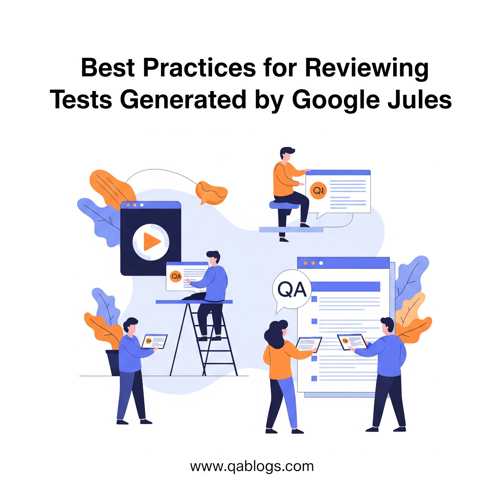

Best Practices for Reviewing Tests Generated by Google Jules

Key Takeaways
- 70% of QA teams face challenges in validating AI-generated tests
- Clear instructions are crucial for Jules' test generation accuracy
- Human oversight remains essential for complex scenarios
- Integration with CI/CD pipelines ensures production-ready tests
In the rapidly evolving world of software development, AI-powered tools like Google Jules, launched in public beta on May 20, 2025, are transforming how developers and QA teams approach coding and testing. Jules, an autonomous coding agent built on the Gemini 2.5 Pro model, integrates with GitHub to read codebases, write tests, fix bugs, and submit pull requests (PRs) asynchronously. Its ability to generate comprehensive test suites is a game-changer for QA teams, but reviewing AI-generated tests requires a structured approach to ensure quality, accuracy, and alignment with project goals. This blog, tailored for QA Blogs, outlines the best practices for reviewing tests generated by Jules, addressing unique challenges and providing actionable strategies to optimize your QA workflow.
Understanding Google Jules and Its Role in QA
Jules is an asynchronous, agentic coding assistant that operates in a secure Google Cloud virtual machine (VM). Unlike traditional code completion tools, Jules clones your GitHub repository, analyzes the codebase, and generates production-ready code, including unit, integration, and end-to-end (E2E) tests. Key features include:
- Contextual Analysis: Jules understands project context, ensuring tests align with code functionality.
- GitHub Integration: It submits PRs with test code, explanations, and results, streamlining collaboration.
- Transparent Planning: Jules presents a detailed plan and reasoning before executing changes, allowing for pre-approval or modification.
- Audio Changelogs: It provides spoken summaries of commits, enhancing accessibility.
- Free Beta Access: Currently free with a five-task-per-day limit, making it accessible for teams worldwide.
While Jules automates test generation, QA professionals must rigorously review its outputs to ensure reliability, coverage, and relevance. A 2025 DigitalOcean report highlights that 70% of QA teams using AI tools face challenges in validating AI-generated outputs, emphasizing the need for robust review practices.
Why Reviewing AI-Generated Tests is Critical
AI-generated tests, while efficient, can introduce unique issues:
- Accuracy Risks: Jules may misinterpret requirements or generate tests that miss edge cases, especially in its beta phase.
- Over-Reliance on Automation: Without human oversight, tests may lack creativity or fail to address domain-specific nuances.
- Repetitiveness: AI might produce redundant or overly generic test cases, as noted in reviews of similar tools like Codex.
- Data Dependency: Test quality depends on the codebase and instructions provided, which may lead to incomplete coverage if inputs are vague.
Effective review ensures that Jules' tests are functional, maintainable, and aligned with quality standards, reducing the risk of defects in production.
Best Practices for Reviewing Tests Generated by Google Jules
Here are actionable best practices to ensure Jules' AI-generated tests meet your QA needs:
1. Provide Clear and Specific Instructions
Jules relies on user-defined tasks to generate tests. Vague instructions like "write tests" can lead to generic or incomplete test suites. To maximize accuracy:
- Define Scope and Requirements: Specify the functionality to test (e.g., "Write unit tests for the payment processing module in file X, covering edge cases like invalid inputs.").
- Include Context: Provide details about the codebase, such as frameworks used (e.g., Jest, Pytest) or testing standards.
- Set Coverage Goals: Request specific coverage metrics, like 80% branch coverage, to guide Jules' output.
Example: Instead of "Write tests for login," use "Generate Jest unit tests for the login function in auth.js, covering successful login, incorrect password, and account lockout scenarios."
2. Thoroughly Review Jules' Proposed Plan
Before Jules executes changes, it presents a detailed plan outlining the tests it will generate and its reasoning. Reviewing this plan is critical to catch potential issues early:
- Verify Alignment: Ensure the proposed tests cover the intended functionality and align with project requirements.
- Check for Edge Cases: Confirm that Jules includes tests for boundary conditions, error handling, and edge cases. If missing, modify the plan to include them.
- Assess Feasibility: Evaluate whether the proposed tests are practical within your testing framework and environment.
Tip: Use Jules' transparent planning feature to collaborate with developers, ensuring the plan reflects both QA and development perspectives.
3. Validate Test Coverage
Jules can generate comprehensive test suites, but QA teams must verify coverage to ensure all critical paths are tested:
- Use Coverage Tools: Run tools like Istanbul (for JavaScript) or Coverage.py (for Python) to measure code coverage and identify gaps.
- Check for Redundancy: Look for repetitive or unnecessary tests that could inflate coverage metrics without adding value.
- Prioritize High-Risk Areas: Ensure tests focus on critical modules or frequently modified code, as AI may not inherently prioritize risk-based testing.
Example: If Jules generates tests for a user authentication module, verify that it covers edge cases like empty inputs, SQL injection attempts, or session timeouts.
4. Assess Test Quality and Maintainability
High-quality tests are readable, maintainable, and aligned with best practices. When reviewing Jules' tests:
- Check Code Quality: Ensure tests follow coding standards, use clear naming conventions, and include comments for clarity.
- Validate Assertions: Confirm that assertions are precise and test meaningful outcomes, not just superficial conditions.
- Ensure Modularity: Verify that tests are modular and reusable, avoiding hard-coded values that could break with code changes.
Example: A test like expect(login("user", "pass")).toBe(true) may be too simplistic. Ensure Jules includes assertions for specific response fields, like expect(response.status).toBe(200).
5. Test for Edge Cases and Robustness
AI-generated tests may miss edge cases or fail to account for real-world scenarios, especially in complex systems. To address this:
- Manually Supplement Tests: Add exploratory tests for scenarios Jules might overlook, such as rare user behaviors or system failures.
- Simulate Real-World Conditions: Use tools like Chaos Monkey to test application resilience under failure conditions not covered by Jules.
- Leverage Human Insight: Combine Jules' automation with human creativity to identify corner cases, such as invalid UTF-8 inputs or race conditions.
6. Integrate with CI/CD Pipelines
To ensure Jules' tests are production-ready, integrate them into your continuous integration/continuous deployment (CI/CD) pipeline:
- Automate Validation: Configure GitHub Actions or Jenkins to run Jules' tests automatically and report failures.
- Monitor Test Stability: Track test flakiness, as AI-generated tests may be sensitive to UI or environment changes.
- Review PRs Promptly: Since Jules submits PRs, set up notifications to review test code quickly and provide feedback.
Tip: Use tools like Testim or Functionize for self-healing tests that adapt to minor UI changes, complementing Jules' output.
7. Provide Feedback to Improve Jules' Output
Jules learns from user feedback during its beta phase, improving its test generation over time. To enhance its performance:
- Accept or Reject PRs: Approve accurate tests or reject those with errors, providing clear reasons to help Jules refine its algorithms.
- Document Issues: Note specific issues, like missing edge cases or incorrect assertions, to guide future improvements.
- Iterate on Instructions: Refine your task prompts based on Jules' outputs to achieve better results in subsequent iterations.
Example: If Jules generates incomplete tests, update your prompt to include specific test types (e.g., "Include integration tests for API endpoints").
8. Leverage Audio Changelogs for Team Collaboration
Jules' audio changelogs (codecasts) provide spoken summaries of test changes, making it easier to review updates during standups or sprint reviews:
- Share with Teams: Use codecasts to quickly communicate test changes to developers and stakeholders.
- Cross-Check with PRs: Verify that the audio summary matches the PR content to ensure consistency.
- Enhance Accessibility: Audio changelogs help non-technical team members understand test updates without diving into code.
Tip: Save codecasts for documentation or training purposes to streamline onboarding for new QA team members.
9. Combine with Manual and Exploratory Testing
While Jules automates test generation, human oversight remains essential for complex scenarios:
- Exploratory Testing: Use human intuition to test user experience or domain-specific edge cases that Jules may miss.
- Manual Review: Validate AI-generated tests for logical errors or misinterpretations of requirements.
- Hybrid Approach: Combine Jules' automation with manual testing to achieve comprehensive coverage, as AI alone may lack creativity for nuanced scenarios.
10. Stay Updated on Jules' Capabilities
As Jules is in beta, Google is actively refining its features. To stay effective:
- Monitor Updates: Check Google's Jules documentation for new features or changes in task limits.
- Upskill Team: Train QA professionals on AI-driven testing and NLP to better interact with Jules.
- Experiment with Tasks: Test Jules on diverse tasks (e.g., unit tests, E2E tests) to understand its strengths and limitations.
Challenges in Reviewing Jules' Tests
Reviewing Jules' tests comes with challenges that QA teams must address:
- Incomplete Coverage: Jules may miss edge cases or domain-specific scenarios, requiring manual supplementation.
- Learning Curve: Teams must adapt to Jules' workflow and GitHub integration, which may require initial setup time.
- Beta Limitations: As an experimental tool, Jules may produce errors or require human intervention to correct test logic.
- Dependency on Inputs: Test quality depends on the clarity of task instructions, necessitating precise communication.
To mitigate these, combine Jules with established QA tools like Katalon or LambdaTest's KaneAI, which offer self-healing and NLP-driven test capabilities.
Real-World Applications
Jules' test generation can enhance QA across various scenarios:
- Enterprise Software: Generate comprehensive unit tests for large codebases, reducing manual effort.
- Agile Teams: Automate test creation in fast-paced sprints, allowing QA to focus on exploratory testing.
- Open-Source Projects: Streamline test contributions for maintainers, ensuring consistent quality.
- E-commerce Platforms: Validate dynamic UI components with E2E tests generated by Jules, adapting to frequent updates.
FAQs
Why is reviewing Jules' tests important?
AI-generated tests may miss edge cases or misinterpret requirements, requiring human review to ensure accuracy and coverage.
How can I improve Jules' test quality?
Provide specific, detailed instructions, review plans thoroughly, and give feedback on PRs to refine Jules' outputs.
What tools complement Jules for QA?
Tools like Katalon, KaneAI, and Testim enhance Jules' tests with self-healing capabilities and advanced analytics.
How do I handle Jules' beta limitations?
Combine Jules with manual testing, monitor updates, and use coverage tools to identify gaps in AI-generated tests.
Conclusion
Google Jules is revolutionizing QA by automating test generation, but its effectiveness hinges on rigorous human review. By providing clear instructions, validating coverage, assessing test quality, and integrating with CI/CD pipelines, QA teams can maximize Jules' potential while addressing its limitations. Combining Jules with manual testing and tools like Katalon or KaneAI ensures comprehensive, high-quality test suites. As AI-driven QA evolves, adopting these best practices will empower teams to deliver reliable software faster.
Ready to streamline your QA process with Jules? Connect it to your GitHub repository and start reviewing AI-generated tests today. Visit QA Blogs for more insights on AI-driven testing and QA trends.
Join Our Community of QA Professionals
Get exclusive access to in-depth articles, testing strategies, and industry insights. Stay ahead of the curve with our expert-curated content delivered straight to your inbox.
Nikunj Mistri
Founder, QA Blogs
About the Author